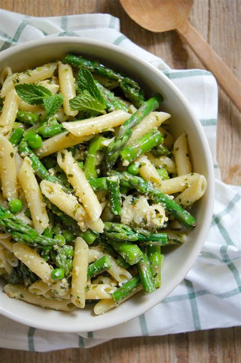

Description
Pesto pasta is easy to make and full of flavor. It tastes good hot or
cold!
This top-rated pesto pasta recipe, which comes together in just 15
minutes, is the perfect quick and easy weeknight dinner.
Ingredients
- Pasta
- Onion
- Olive Oil
- Pesto
- Salt and Pepper
- Cheese
Steps
- Boil the pasta in salted water and drain.
- Cook the onion in oil, then stir in the pesto and seasonings.
- Add the pesto mixture to the hot pasta and toss with cheese.